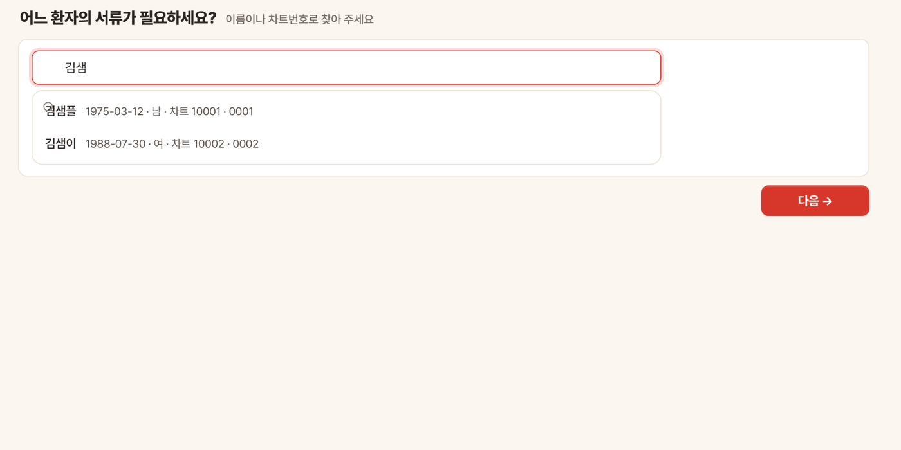
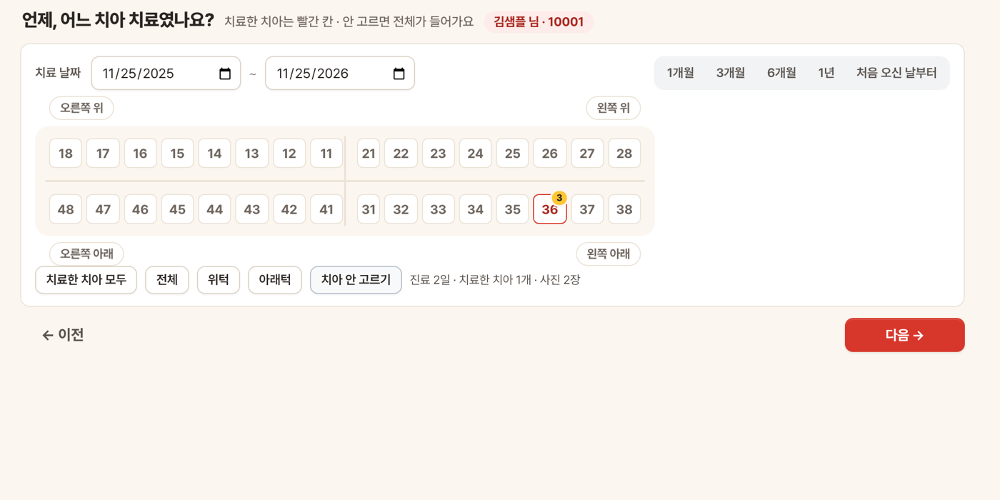
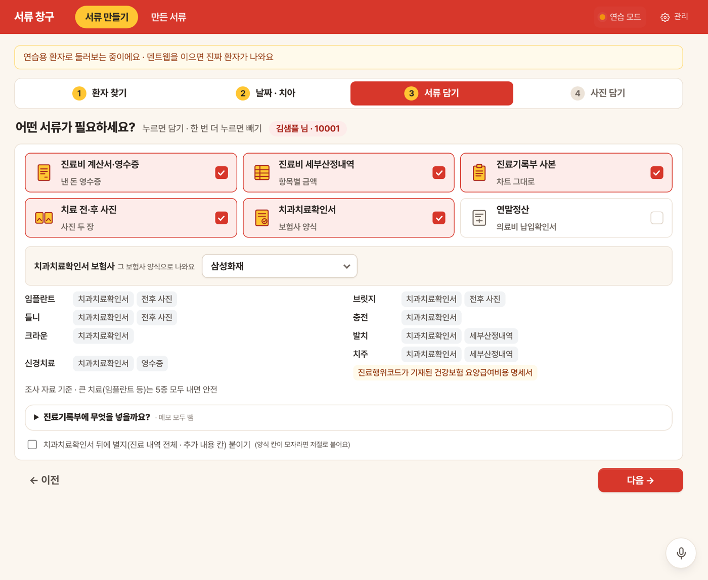
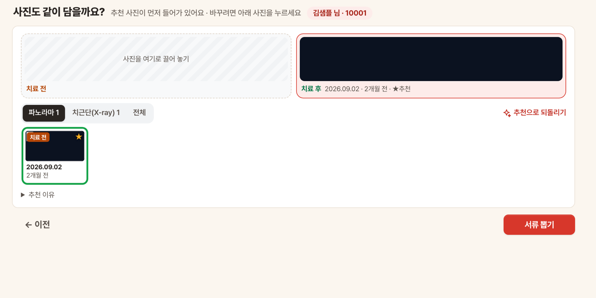

홈 › 보험 청구 서류 5종 한 번에 (실비·치아보험)
보험 청구 서류 5종 한 번에 (실비·치아보험)
환자분이 「보험 청구할 서류 주세요」 하실 때, 서류 창구에서 주문하듯 네 걸음 고르고 [서류 뽑기]를 누르면 한꺼번에 나옵니다.
주문하듯 네 걸음이면 끝납니다
- 1환자 찾기

이름 일부·차트번호·전화 뒷자리로 찾아 누릅니다.
- 2날짜 · 치아

치료 날짜 [1년] 한 번. 치아는 안 골라도 됩니다.
- 3서류 담기

다섯 가지가 이미 체크(✔)되어 있어요. 필요 없는 것만 눌러 빼고, 확인서는 밑 줄에서 보험사를 고릅니다.
- 4사진 담기

치료 전·후 추천 사진이 먼저 들어가 있어요. 바꿀 때만 아래 사진을 누릅니다.
네 걸음 다 했으면 아래 [서류 뽑기] → 뽑은 서류를 넘겨 보고 [출력]. 끝!
한 번에 나오는 다섯 가지
- 진료비 계산서·영수증
- 진료비 세부산정내역
- 진료기록부 사본
- 치료 전·후 사진
- 치과치료확인서(보험사 양식)
이번 청구에 필요한 것만
「서류 담기」에서 보험사가 달라는 서류만 담고, 「날짜·치아」에서 이번 청구와 관계없는 진료일은 빼고 뽑을 수 있습니다. 서류는 덴트웹 기록 그대로 만들어지며, 덴트웹 기록은 바뀌지 않습니다.
서류는 실제 진료 내용과 같아야 합니다.